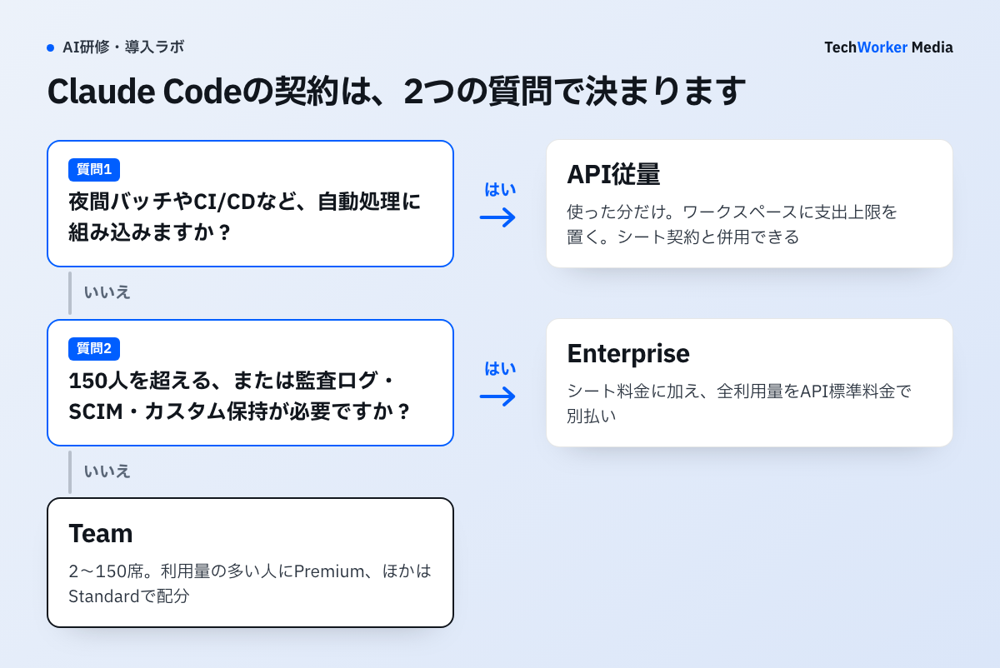

Claude Codeの法人契約は3つあり、料金はどう違うのですか？
入口はTeam・Enterprise・API従量課金の3つで、Teamなら年払い1人月20ドルから始められます。

Claude Codeは、Anthropicが提供するコーディングエージェントです。ターミナル（文字で操作する画面）の中で、AIが自分で作業を進めます。法人で使う契約は、次の3系統に分かれます。
- Teamプランは、人数分のシート（1人分の利用枠つきライセンス）を契約します。対象は2〜150席です。Standardは年払いで1人月20ドル、月払いで25ドルです。Premiumは年払いで1人月100ドル、月払いで125ドルです。
- Enterpriseプランは、年払いのシート料金を払います。加えて、Claude、Claude Code、Coworkの全利用量をAPI標準料金で別途支払います。セルフサービスは20席以上、営業経由は50席以上が条件です。
- API従量課金は、使った分だけ支払う方式です。料金はモデルごとに決まります。100万トークン（AIが読み書きする文字量の単位）当たり、入力が1〜10ドル、出力が5〜50ドルです。
金額はすべて米ドルです。2026年9月30日に確認しました。出典は、Anthropic公式のTeamプラン、Enterpriseプラン、API料金のページです。
目安は次のとおりです。少人数で試すならTeamです。統制の要件が強い組織はEnterpriseです。自動処理に組み込むならAPIです。
TeamはStandardとPremiumを混在できます。全員にPremiumを配る必要はありません。利用量の多い人にPremiumを、それ以外の人にStandardを割り当てます。
2026年9月の記録では、TechWorkerはClaude Codeをどう契約し、どれだけ使っていましたか？
当時はMax 20x（月200ドル）を契約し、超過分を従量で支払っていました。2026年9月14日〜30日の使用量は、API換算で約3,000ドル分でした。

2026年9月14日〜30日の利用記録では、TechWorker代表の古野がClaude Codeを使っていました。用途は、自社サービスの開発、このメディアの改修、営業資料の作成、毎朝の自動の集計です。
この期間の契約は、個人向けプランのMax 20x（月200ドル）でした。使用量の上限を超えた分を従量で払う設定（extra usage）も有効でした。
使った量は、代表の端末に残る利用記録を集計ツール（ccusage）でAPI料金に換算して測りました。記録が残る9月14日〜30日の17日間で約3,000ドル分、1日平均で約180ドル分です。
9月のモデル別の内訳は、次のとおりです（API料金に換算した額）。
- Claude Opus 5.5：約1,200ドル
- Claude Fable 5.1：約1,000ドル
- Claude Sonnet 5・5.5：約630ドル
- そのほか：約130ドル
換算額は、実際の請求額とは異なります。定額の範囲内の利用には、追加の支払いは発生しません。
実際に使ってみて分かったのは、日による差の大きさです。少ない日は約4ドル分、多い日は約850ドル分で、200倍以上の開きがありました。多い日は、大きな改修が重なった日です。
当時の費用管理では、次の3つを行っていました。現在の運用を示す記録ではありません。
- 作業ごとにモデルを分けます。当時は、大事な判断に上位モデル、調べものと通常の実装にSonnet、決まった抜き出しにHaikuを割り当てていました。毎朝の自動の集計もSonnetで動かしていました。
- キャッシュを効かせます。9月は、入力の約97%がキャッシュからの読み込みでした。キャッシュは、同じ前提情報を安い単価で読み直す仕組みです。
- 費用を毎回見える場所に出します。当時は、1回の応答ごとに推定額を表示し、前日の利用額を社内のSlackへ送る運用でした。
人数と単価だけで年額を出すと、この日ごとの差を見落とします。次の5つの手順では、数週間の実測を挟んで、契約と費用の根拠を順番にそろえていきます。
契約を決めて稟議に載せるまで、どんな手順で進めますか？
使い方の整理、入口の選定、上限の設定、試験運用、稟議の作成の5つの手順で進めます。

- 使い方を2種類に分けます。1つは、人が対話しながら使う日常利用です。もう1つは、夜間バッチやCI/CD（ソフトウェアの自動テストや配布の仕組み）などの機械的な利用です。前者はシート課金が、後者はAPI従量が実態に合います。両者は併用できます。
- 人数で入口を決めます。2〜10人で試すならTeamです。11〜150人に広げる場合も、Teamの中でStandardとPremiumを配分します。150人を超える場合は、Enterpriseを検討します。次の統制要件がある場合も同じです。監査ログ、SCIM（利用者情報を自動で同期する仕組み）、カスタム保持（データの保存期間の個別設定）です。
- 支出の上限を先に決めます。Teamでは、利用枠を使い切った後に管理者が使用量クレジットを有効にすると、超過分がAPI標準料金で消費されます。組織全体と利用者ごとの月間支出上限を設定できます。API従量では、Claude Code専用のワークスペースに支出上限を置けます。このワークスペースはClaude Consoleに自動で作られます。メンバー別の利用状況は、Claude Code Analytics APIで確認できます。
- 2〜4週間の試験運用で実額を測ります。まず、コードレビュー、テスト作成、調査、定型改修などから対象業務を絞ります。次に、導入前後の所要時間と利用者別の費用を記録します。API従量の費用は、モデル、入出力の長さ、キャッシュ、バッチ処理、データ所在地で変わります。年額は「1人当たりの月間実測額×対象人数×12カ月」で出します。
- 総額と効果を稟議に載せます。費用は、ライセンス費に運用・教育・ガバナンスの工数を足した年額です。従量の場合は、実測単価に人数を掛けます。効果は、削減時間に自社の人件費を掛けて金額にします。品質、リードタイム、属人化の解消は、定性で添えます。
手順4で使うモデル別の標準単価は、次のとおりです。単位は米ドルで、100万トークン当たりです。出典は、Anthropic公式「Pricing」（2026年9月30日確認）です。
- Claude Fable 5.1は、入力10ドル、出力50ドルです。
- Claude Opus 5.5は、入力4ドル、出力20ドルです。
- Claude Sonnet 5.5は、入力2ドル、出力10ドルです。
- Claude Haiku 4.5は、入力1ドル、出力5ドルです。
この単価は標準のベース料金です。プロンプトキャッシュ、バッチ処理、データ所在地、Fast mode、クラウド事業者の料金は、別の条件になります。
手順5で稟議書に入れる項目を、チェックリストにしました。上から順に埋めると、決裁者が確認したい論点をひととおりカバーできます。
稟議の構成要素チェックリスト
□ 目的とスコープ（対象部署・人数・期間）
□ プラン選定の根拠（Team・Enterprise・APIの比較と選定理由）
□ 費用の総額（ライセンス、運用、教育を年額に換算。従量はモデル別単価と自社の実測で算出）
□ 効果の測定方法（対象業務、実測の取り方、判定基準）
□ リスクと統制（データの取り扱い、権限、監査、支出上限）
□ 定着計画（研修、社内チャンピオン、展開ステップ）
□ 見直し条件（利用率や効果が基準に届かないときの縮小・撤退ライン）
見直し条件まで書くのがコツです。撤退ラインを先に示す提案は、経営判断の材料として読まれます。
うまくいかない例には、どんなものがありますか？
よくある失敗は、ライセンス費だけで予算を組むこと、上限を置かないこと、請求先の混在を見落とすことの3つです。
稟議や導入後に起きやすい例を、6つ挙げます。
- ライセンス費だけを積んでしまう。Claude Codeはインストールすれば動きます。ただ、成果を出すには、ほかの費用も要ります。運用管理、教育・定着、ガバナンス、従量の変動への備えです。コンテキスト整備（CLAUDE.mdなど、AIに渡す前提情報を整える作業）も含みます。教育や相談の機会がないと利用が続かず、シート費だけが残る場合があります。
- 全員にPremiumを配ってしまう。TeamはStandardとPremiumを混在できます。職種だけで分けず、実際の利用量を見て配分します。
- SSOだけを理由にEnterpriseへ進む。SSO（一度のログインで複数のサービスに入れる仕組み）は、Teamにも含まれます。Enterpriseへ切り替える理由には、監査ログなどの追加機能が必要かどうかを使います。
- 支出の上限を置かずに従量で始める。Opusを常用し、長いセッションを開きっぱなしにすると、費用が膨らみます。Sonnet中心でこまめにコンテキストを切れば、費用を抑えられます。月次のレビューも組み合わせます。
- ANTHROPIC_API_KEYの混在に気づかない。Teamで使う端末にこの環境変数があると、APIキーが優先して使われます。その結果、API利用料として請求されます。対話利用と自動処理で、認証方式と実行環境を分けます。
- 出所の曖昧な数字を稟議に貼る。「開発生産性が◯倍」といった数字は、決裁者に根拠を問われたときに説明できません。提案全体の信頼が崩れます。自社の実測だけを使います。
Enterpriseを定額と考えてしまう例もあります。シート料金にトークン利用枠は含まれません。旧契約のシートは、次回更新まで条件が残ります。管理画面のシート種別を確認します。
展開時の運用ルールや教育の設計は、Claude Codeの社内展開で詳しく扱っています。エンジニア以外の部門での使いどころは、非エンジニアのClaude Code活用が参考になります。
契約形態ごとの料金と向いている組織を、1つの表で比べるとどうなりますか？
少人数はTeam、統制重視はEnterprise、自動化はAPIが基本線です。下の表で全体を確認できます。
| 導入形態 | 料金（米ドル） | 含まれるもの・特徴 | 向いている組織 |
|---|---|---|---|
| Team（Standardシート） | 1人月20ドル（年払い時） 月払いは25ドル | Claude・Claude Code・Coworkを含む。利用枠は小さめ | チャット中心のメンバー |
| Team（Premiumシート） | 1人月100ドル（年払い時） 月払いは125ドル | Standardと同じ機能を含み、利用枠が大きい | 日常的にコードを書く・書かせるメンバー |
| Enterprise | 年払いのシート料金＋全利用量のAPI従量 | 現行は単一シート。Claude Codeを含むが利用量は別料金。セルフサービスは20席以上、営業経由は50席以上 | 大規模組織、セキュリティ・統制要件が強い組織 |
| API従量（Console／クラウド） | 使った分だけ（モデル別トークン単価） | ワークスペース単位の支出上限と分析APIで管理。Amazon Bedrock、Google Cloud、Microsoft Foundry経由なら自社クラウドの請求に合算 | CI/CD・自動化・エージェント組み込みが主目的の組織 |
| （参考）Pro／Max | Proは月20ドルまたは年200ドル Maxは月100ドルまたは200ドル | 個人向け。Claude Codeを含むが法人管理機能はない | 個人の検証・トライアル |
出典：Anthropic公式の Teamプラン・Enterpriseプランの説明ページ（2026年9月30日確認）。単位は米ドル。
Teamプランは2〜150席が対象で、StandardとPremiumを混在できます（2026年9月30日確認）。150席を超える場合や、監査ログなどの統制要件がある場合は、Enterpriseを検討します。
Claude Enterpriseの料金と従量課金は、どう決まりますか？
Enterpriseの料金は、年払いのシート料金と、全利用量のAPI標準料金の合計で決まります。
Enterpriseの法人プランは、単一のシートを年払いで契約します。シート料金にトークン利用枠は含まれません。
Claude、Claude Code、Coworkの全利用量は、API標準料金で別途支払う従量課金です。価格は、モデルと入出力の長さで変わります。
- セルフサービスは20席以上で、利用量を前払いクレジットから消費します。
- 営業経由は50席以上で、利用量を月次で請求します。
旧契約のシートは請求方式が異なり、条件は次回更新まで残ります。支出上限を設定して、利用量の増え方を管理します。
確認日は2026年9月30日です。出典は、Anthropic公式のTeamプラン・Enterpriseプランの説明ページです。
よくある質問
使えます。Claude CodeはTeamの全シートに含まれます。PremiumはStandardに比べて利用枠が大きいシートです。米国向け価格は、Standardが年払いで1人月20ドル、月払いで25ドルです。Premiumは年払いで1人月100ドル、月払いで125ドルです。どちらにも利用枠があります。枠を使い切った後も続ける場合は、管理者が使用量クレジットと支出上限を設定します。料金・通貨・税は地域で異なるため、契約画面でも確認してください。
定額のシート料金だけではありません。新規Enterpriseは、単一のシートを年払いで契約します。Claude、Claude Code、Coworkの利用量は、API標準料金で別途支払います。シート料金にトークン利用枠は含まれません。セルフサービスは20席以上で、利用量を前払いクレジットから消費します。営業経由は50席以上で、利用量を月次で請求します。旧契約のシートは請求方式が異なるため、管理画面でシート種別を確認してください。
人数だけでは決まりません。2026年9月30日に確認した標準料金は、100万トークン当たりで次のとおりです。Claude Fable 5.1は入力10ドル・出力50ドルです。Claude Opus 5.5は入力4ドル・出力20ドルです。Claude Sonnet 5.5は入力2ドル・出力10ドルです。Claude Haiku 4.5は入力1ドル・出力5ドルです。モデル、入出力の長さ、キャッシュ、バッチ処理、データ所在地で請求額は変わります。2〜4週間の試験運用で利用者別の実額を測り、支出上限を設定してから年額予算へ換算してください。
使い分けられます。対話型のClaude CodeはTeamアカウントで利用します。CI/CDや自動処理は、Claude PlatformのAPIキーで実行できます。ただし、環境変数にANTHROPIC_API_KEYがあると、Claude CodeはAPIキーを優先して使います。意図しない請求先に計上されないよう、認証方式と実行環境を分けて管理してください。
生成AI研修は、人材開発支援助成金の対象となり得ます。ただし、対象要件と申請の可否は、研修の形態や企業の状況で異なります。管轄の労働局または社労士にご確認ください。TechWorkerの研修費用については、お問い合わせください。
次の一歩は何から始めればよいですか？
対象業務と人数を決めて、2〜4週間の試験運用の枠を取ることから始めます。
- 誰の、どの作業にClaude Codeを使うかを決めます。対象人数も決めます。
- 2〜4週間の試験運用の枠を取り、支出上限を設定します。
- 実測値をもとに、稟議のチェックリストを上から埋めます。
プランの選定から稟議資料の組み立て、研修・定着までは、TechWorkerが伴走します。検討段階のご相談だけでも歓迎です。画面下の「研修の相談をする」からお問い合わせください。